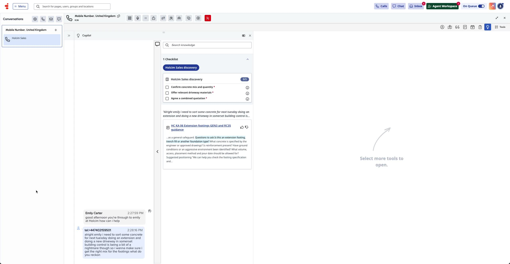
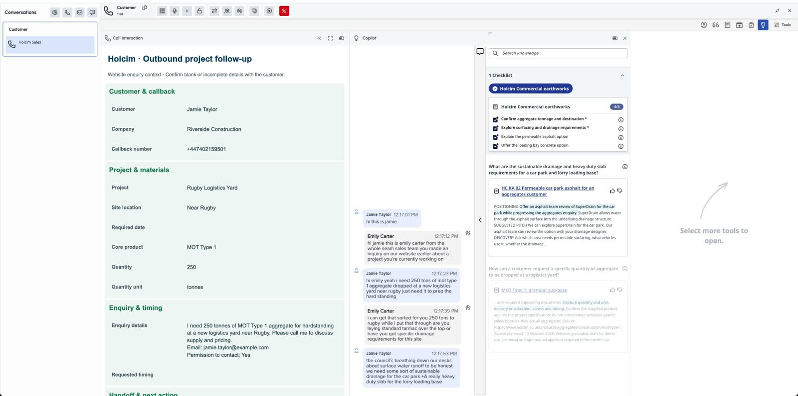
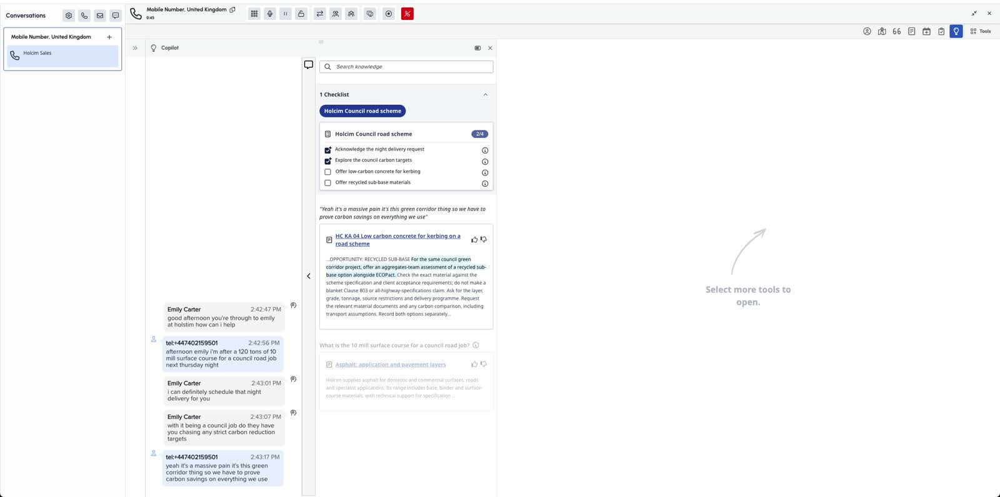

Choose how to follow Jamie’s enquiry ↗
Choose how to follow Jamie’s enquiry ↗From project enquiry to a reviewable quote
Follow Jamie Taylor and Riverside Construction from a detailed project enquiry to an informed adviser follow-up and a draft quotation ready for review.
The demo library
Explore the complete experience in an abbreviated playback. Captures and labelled simulations show the customer and agent journey.
Demos available
Open a playback and use the arrow keys to move through the journey.
Ready to replay
Choose how to follow Jamie’s enquiry ↗Follow Jamie Taylor and Riverside Construction from a detailed project enquiry to an informed adviser follow-up and a draft quotation ready for review.
 View the full playback ↗
View the full playback ↗A prerecorded caller and AVA illustrate project qualification and adviser handoff.

Explore the agent experience ↗Follow the residential concrete and driveway enquiry through live transcription, relevant knowledge, sales discovery and completed after-call work. Explore 15 annotated moments with the supplied prepared voices.

Follow the enquiry to the callback ↗Follow a website enquiry through the outbound campaign and contact record to an agent callback, knowledge assistance and after-call work. Explore 23 annotated scenes with the supplied prepared voices.

Explore the council road enquiry ↗Follow a council road enquiry through the captured Genesys agent workspace: night surfacing delivery, carbon targets, ECOPact kerbing concrete, recycled sub-base and a combined quotation request. Explore eight annotated turns with the prepared voices.